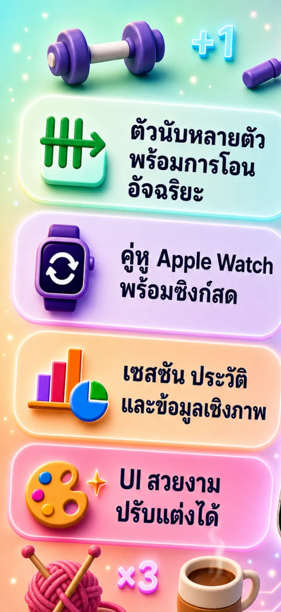
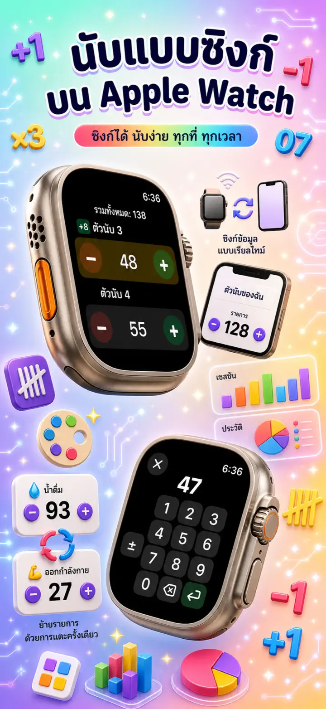
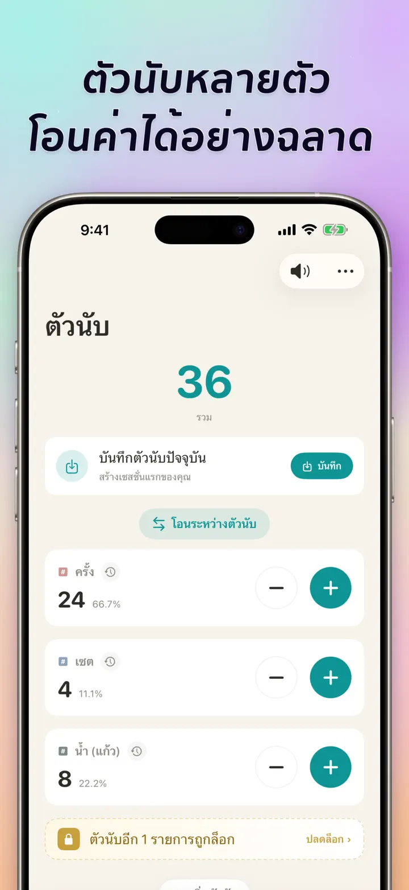
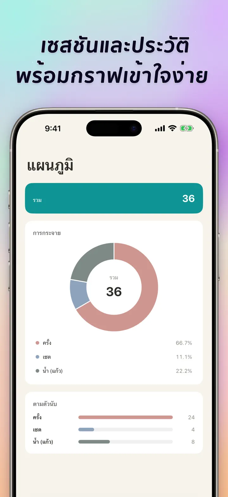
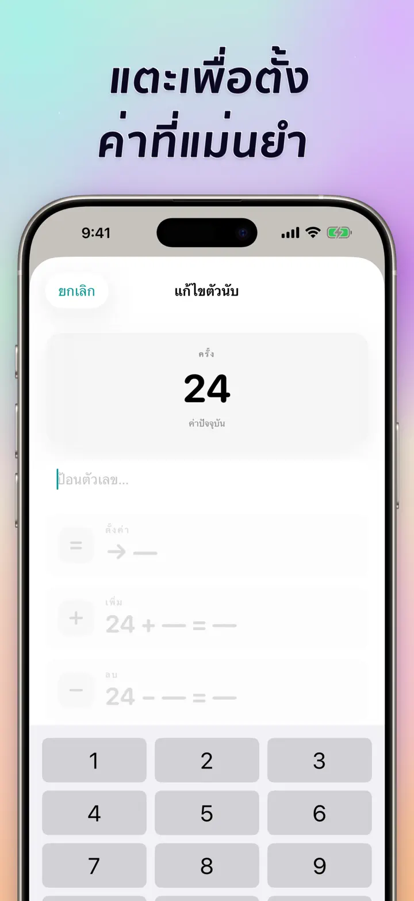
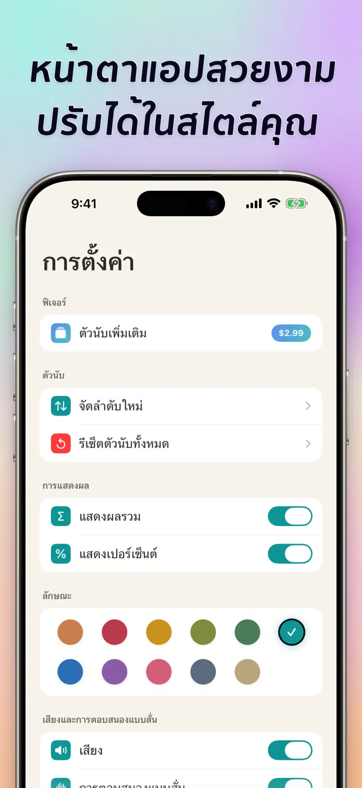
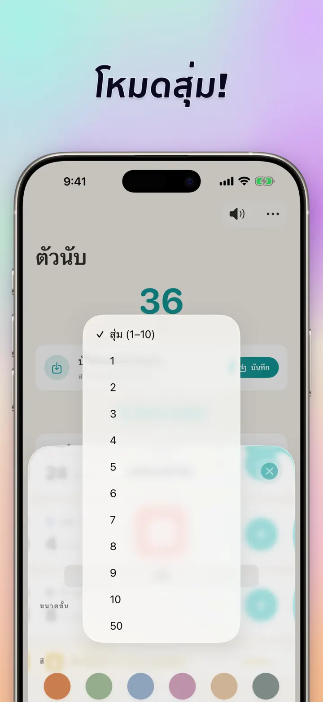

เคาน์เตอร์ 123
ซิงก์ Watch คลิกเกอร์ คะแนน
ใหม่: วิดเจ็ตหน้าจอโฮม — แตะ +/- บนวิดเจ็ตได้เลยไม่ต้องเปิดแอป เครื่องนับและคลิกเกอร์ ซิงก์ Apple Watch โหมดสุ่ม กราฟ และประวัติ
ดาวน์โหลดจาก App Store
เกี่ยวกับแอป
เคาน์เตอร์ 123 คือเครื่องนับที่รวดเร็วและยืดหยุ่นสำหรับ iPhone, iPad และ Apple Watch ตั้งชื่อตัวนับ เลือกสี แล้วนับอะไรก็ได้ — เซ็ตยิม แถวการถัก ประคำ คะแนนในห้องเรียน สต็อก คะแนนเกม ข้อมูลทั้งหมดเก็บในเครื่อง ทำงานแบบออฟไลน์
ตัวนับปรับแต่งได้
- สร้างตัวนับแยกสำหรับกิจกรรม เกม รูทีน หรือรายการต่างๆ
- ชื่อและสีเฉพาะสำหรับแต่ละตัวนับ
- ลากเพื่อจัดเรียงใหม่
- กดค้างเพื่อนับต่อเนื่องแบบเร็ว
- ออฟไลน์เต็มรูปแบบ — ไม่ต้องลงทะเบียน ไม่มีคลาวด์
ป้อนตรงและทำงานเป็นชุด
- แตะตัวนับเพื่อกำหนดค่าเริ่มต้นได้ทันที — ไม่ต้องรีเซ็ตเป็นศูนย์
- +/- เป็นชุด: เปลี่ยนตัวนับด้วยตัวเลขใดก็ได้ด้วยการแตะครั้งเดียว
- โอน: ย้ายค่าจากตัวนับหนึ่งไปอีกตัวโดยไม่ต้องทำสองครั้ง
- ขั้นกำหนดเอง: แตะหนึ่งครั้งเพิ่ม 1, 5, 10, 100 หรือตามที่เลือก
- แสดงตัวอย่างสดของทุกการเปลี่ยนแปลง
โหมดสุ่ม
- ให้ตัวนับสุ่มค่าใหม่ตั้งแต่ 1 ถึง 10 ทุกครั้งที่แตะ
- เพิ่มหรือลบค่าสุ่มด้วยปุ่ม + และ -
- เหมาะกับการฝึก เกม รางวัลสุ่ม กิจกรรมในชั้นเรียน และรูทีน
- ทุกการแตะแบบสุ่มถูกบันทึกไว้ในประวัติของตัวนับ
ยอดรวมและกราฟ
- ยอดรวมของตัวนับทั้งหมดในพริบตา
- มุมมองเปอร์เซ็นต์: สัดส่วนของแต่ละตัวนับในยอดรวม
- กราฟแท่งแบบโต้ตอบ — สลับระหว่างค่า (#) และเปอร์เซ็นต์ (%)
- เรียงตามค่าเพื่อดูอันดับทันที
ประวัติและการแชร์
- ประวัติครบ: ทุกการเพิ่ม ลด และแก้ไขถูกบันทึก
- บันทึกชุดตัวนับและโหลดใหม่ได้ทันที
- แชร์การตั้งค่ากับทีม นักเรียน หรือเพื่อน
- ดูประวัติเป็นบันทึกตามวันที่ เซสชันแบบกลุ่ม หรือสถิติรายวัน/สัปดาห์/เดือน
ซิงก์สดกับ APPLE WATCH
- แก้ตัวนับบน iPhone หรือ Apple Watch แล้วค่าจะซิงก์กัน
- แอป watchOS แบบเนทีฟจริงๆ — ไม่ใช่แค่แอปคู่กัน
- ชื่อ สี และค่าซิงก์อยู่บนข้อมือ
- แตะเพื่อนับ กดค้างเพื่อทำซ้ำ — จากนาฬิกาโดยตรง
- ทำงานได้อิสระแม้ไม่มี iPhone อยู่ใกล้
สำหรับ iPhone, iPad และ APPLE WATCH
- เลย์เอาต์ปรับตามขนาดหน้าจอทุกรูปแบบ
- iPad แสดงตัวนับได้มากขึ้นในครั้งเดียว รองรับ Split View
- ความเป็นส่วนตัวมาก่อน: เก็บในเครื่อง ไม่มีคลาวด์ ไม่มีบัญชี
เหมาะสำหรับ
- เซ็ตและเรพในยิม
- แถวการถักและโครเชต์
- ประคำ ตัสบีห์ ลูกปัดสวดมนต์
- คะแนนในห้องเรียนและการเช็กชื่อ
- วอลเลย์บอล บาสเกตบอล แฮนด์บอล — คะแนนเร็ว
- ปิงปอง
- สต็อกและนับคลังสินค้า
- บอร์ดเกม ไพ่ รัมมี่ ดัมมี่
- รอบสระว่ายน้ำและลู่วิ่ง
- ดูนก
- นับผู้เข้าร่วมงาน
- ติดตามนิสัยและเป้าหมาย
ดาวน์โหลด เคาน์เตอร์ 123 แล้วทำให้การนับทุกครั้งง่ายขึ้น — ชัดเจน รวดเร็ว และเป็นส่วนตัว
นโยบายความเป็นส่วนตัว: https://masawata.net/privacy-policy.html ข้อกำหนดการใช้งาน: https://www.apple.com/legal/internet-services/itunes/dev/stdeula/
ภาพหน้าจอ






เคาน์เตอร์ 123
ใหม่: วิดเจ็ตหน้าจอโฮม — แตะ +/- บนวิดเจ็ตได้เลยไม่ต้องเปิดแอป เครื่องนับและคลิกเกอร์ ซิงก์ Apple Watch โหมดสุ่ม กราฟ และประวัติ
ดาวน์โหลดจาก App Store